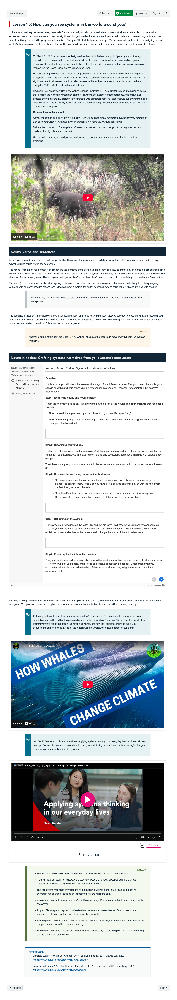

Course Description
Many of today's complex challenges cannot be tackled with the narrowly focused, unconnected thinking of the past. Managers must make decisions and take action in complex environments where finance, economics, markets, people, and nature are interconnected and interdependent. This ‘messy’ interconnectedness blurs the boundaries between organisations, communities and fields of expertise—nothing is neat and tidy. Systems thinking focuses on the relationships among system elements and the interactions of the system with its environment, rather than on the elements themselves. This course will introduce students to the world of systems and systems thinking. Students will consider the merits of looking at wholes rather than unconnected parts and explore ways managers can leverage the nature of systems, even in complex, unpredictable environments, to influence outcomes more profoundly than linear or mechanistic thinking can.
Learning Outcomes
- Combine the elements of complexity and systems with the role of connectedness to gain a better insight into local and global issues.
- Discriminate between the structural components of systems and how they shape system behaviour.
- Choose appropriate system locations to intervene when system change is required.
- Ccompare and resolve the archetypal patterns of systems dynamics that may give rise to unintended consequences of systems interventions.
- Propose systems interventions in an insightful way within identified boundaries.
- Diagnose uncertain, messy systems environments and the issues that emerge from complex living systems.
Learning Experience
This course is designed to support students in developing the capability to work effectively in complex, uncertain, and interconnected environments by moving beyond traditional linear problem-solving approaches. Systems thinking is positioned as both a conceptual framework and a practical discipline, with deliberate application to health service management and international business contexts.
The learning experience is intentionally scaffolded across 12 modules to shift students from recognising complexity to diagnosing system behaviour and ultimately designing informed interventions. Early modules establish foundational concepts by contrasting mechanistic and systems thinking, introducing definitions of systems, complexity, connectedness, and feedback, and encouraging students to observe patterns in real-world systems rather than isolated events.
To support conceptual understanding, abstract ideas were translated into concrete and visual learning experiences. A custom-produced animation, The paradox of deconstruction: frog vs bicycle, was developed in collaboration with the academic and media team. This analogy was used to illustrate why complex living systems cannot be understood by breaking them into parts, reinforcing the central systems thinking principle that connectedness and relationships, not components alone, determine system behaviour.
Mid-course modules focus on building analytical fluency through systems representation tools such as causal loop diagrams, stock and flow diagrams, and behaviour-over-time graphs. Students progressively learn to identify system structures, boundaries, hierarchies, mental models, delays, and information flows. These concepts are sequenced to reflect how complexity is encountered in practice, with formative knowledge checks embedded to reinforce accuracy without disrupting learning flow.
Systems archetypes are introduced in later modules as recurring patterns of behaviour that explain why well-intentioned interventions often produce unintended consequences. Archetypes such as fixes that fail, limits to growth, shifting the burden, escalation, and the tragedy of the commons are explored using contemporary examples drawn from healthcare systems and international business contexts.
Authenticity and professional relevance are strengthened through interviews with external industry stakeholders. These interviews allow students to hear directly from practitioners describing organisations as complex systems, making abstract theory visible in lived professional experience. This approach supports sense-making and helps students connect systems thinking concepts to real decision-making environments.
The final modules guide students from analysis to action by introducing Donella Meadows’ leverage points and concepts from complexity science, including emergence and complex adaptive systems. Students are supported to critically evaluate where interventions are likely to have superficial, temporary, or transformative impact.
Visual scaffolding is used consistently throughout the course to support cognitive clarity. Discipline-specific examples are colour-coded, enabling students to distinguish between health service management and international business applications while engaging with shared systems concepts. Interactive media, branching scenarios, and visual system maps are used to deepen engagement and reduce cognitive overload when working with complex ideas.
Assessment design prioritises application, reflection, and integration over reproduction. Research and evaluative reports require students to apply systems thinking tools to complex situations, while case studies and reflective journals encourage iterative learning, humility, and engagement with uncertainty. Weekly interactive sessions provide structured opportunities for discussion, collaborative exploration, and the testing of assumptions.
By the end of the course, students develop not only technical systems thinking skills, but a fundamentally different way of seeing problems, organisations, and change. They are better equipped to recognise interconnectedness, anticipate unintended consequences, and intervene more thoughtfully in complex real-world systems.
Topics
- Introduction to systems and systems thinking
- Understanding complexity and patterns
- Visualising and analysing systems
- System representation using diagrams
- Stock and flow vs causal loop diagrams
- Behaviour over time and feedback loops
- Hierarchies, boundaries, and resilience in systems
- Limits, self-organisation, and pathways to results
- Observing systems and systemic layers
- Mental models: formation and application
- System delays and causal loop representations
- Role of information flows and root cause analysis
- Introduction to systems archetypes
- Common archetypes (e.g., fixes that fail, limits to growth)
- Advanced archetypes (e.g., escalation, conflicting goals)
- Analysing variation in systems
- Measuring progress and applying principles
- Meadows' intervention points
- Low-, medium-, and high-leverage interventions
- Linking interventions to systems archetypes
- Complex adaptive systems and their properties
- Emergence and practical examples
- Applying systems thinking in organisational and sectoral contexts
Development Team
David Pender
Course Author
Lead

Rich Bartlett
Learning Designer
Lead

Jack Eames
Digital Education Developer
Lead
Assessments
-
Research Report
Short Response Questions
In this assessment learners apply the theory of systems archetypes to a real-world scenario derived from their experience. By exploring the application of systems archetypes, leaners deepen their understanding of systemic behaviours, dynamics, and interdependencies, fostering insights that can contribute to effective problem-solving and decision-making within complex systems.
25%
-
Evaluative Report
Report
This assessment requires learners to apply systems thinking to give policy advice on a significant social issue, emphasising the interrelation and interdependence of system parts. They must evaluate recommendations for change, gaining insights into systemic behaviours and intervention leverage points.
25%
-
Case Study Discussions
Case Study
This assessment presents various case studies that offer opportunities for learners to apply systems thinking. Through practical exercises and real-world scenarios they deepen their understanding of how systems operate, from visible elements to deeply rooted structures and recurring patterns. Engaging with multi-dimensional aspects of systems, they refine their analytical abilities and written communication skills.
25%
-
Reflective Journal
Learning Journal
For this task learners critically engage with the course topics and how they interrelate within the context of a system. Learners are asked to go beyond a passive recollection of the course content and are invited to explore and reflect on their growth in Systems Thinking.
25%
Snapshots

Learning Resources
-
Traditional vs Systems thinking
This composite image showcases two contrasting diagrams. On the left, a series of straight arrows flowing neatly from top to bottom depict traditional linear thinking, illustrating a single-path progression from problem to solution. On the right, a complex, interconnected web of multi-directional arrows and nodes represents systems thinking, indicating a myriad of influences, feedback loops, and outcomes, highlighting the chaotic, non-linear nature of the approach

-
Explanation of the Cynefin Model
Introducing the Cynefin model: a decision-making framework that effectively helps you tackle complex issues.